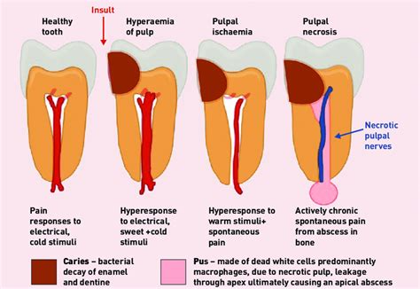
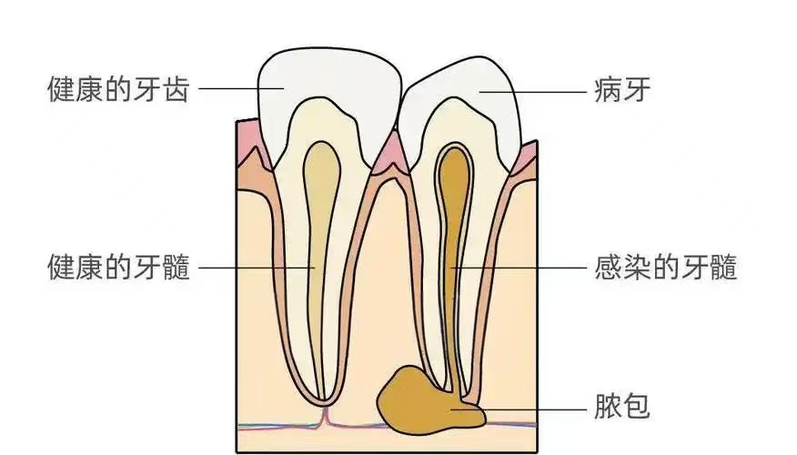

牙髓炎
危险程度
中风险
就医建议
症状出现立即就医
最佳就医时间
症状出现初期
什么是牙髓炎？
牙髓炎(Pulpitis)是牙髓组织（牙神经）的急性或慢性炎症，多由龋齿、牙外伤或牙周炎逆行感染引起。
关键特征：
- 剧烈自发性疼痛
- 夜间痛、冷热刺激痛加剧
- 疼痛无法定位且放射至头面部
牙髓炎分类
可复性牙髓炎
患牙遇冷热刺激产生短暂疼痛，刺激去除疼痛立即消失
不可复性牙髓炎
一般由可复性牙髓炎发展而来，细菌入侵使牙髓发生不可逆炎症变化
慢性牙髓炎
一般不发生剧烈自发性疼痛，但有时可出现阵发性隐痛或钝痛
牙髓坏死
牙髓炎发展的最终结果，一般无自觉症状，患者常因牙齿变色而就诊
牙髓炎分类
可复性牙髓炎
冷热刺激痛，刺激去除后疼痛立即消失，无自发痛，牙髓活力正常
不可复性牙髓炎
包括急性牙髓炎和慢性牙髓炎急性发作，剧烈自发性疼痛，夜间加重，冷热刺激痛剧烈
慢性牙髓炎
长期冷热刺激痛或钝痛，无明显自发痛，牙髓部分或全部坏死
牙髓坏死
牙髓无活力，无疼痛，牙齿变色，X线片显示根尖周阴影
图示说明：
图1：牙髓炎发病机制示意图

上图展示了牙髓炎的发病机制
图2：正常牙髓与牙髓炎对比图

上图展示了正常牙髓与牙髓炎的对比
主要症状
主观症状
疼痛感
牙齿疼痛
牙齿色变
牙齿颜色、外观发生改变
牙齿敏感
牙齿对冷热刺激的敏感度异常
咬合异常
咬合时有异样的感觉
客观体征
牙齿外观改变
呈暗黄色、灰色、黑色
牙髓活力改变
无法感知外界温度
叩诊和扪诊
无明显疼痛
牙龈情况
牙龈红肿、瘘管
治疗方法
药物治疗
- 漱口水
- 碘甘油
- 抗生素
物理治疗
- 洗牙
- 龈下刮治和根面平整
环境调节
- 口腔卫生
- 饮食调节
- 生活习惯